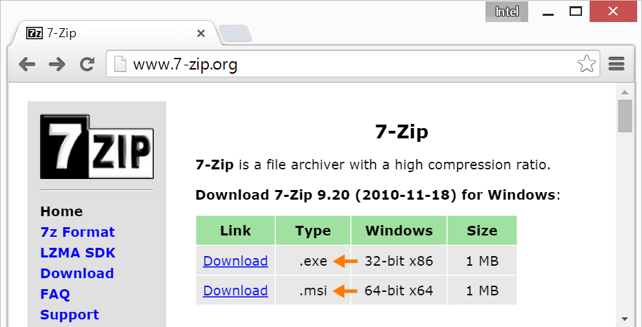
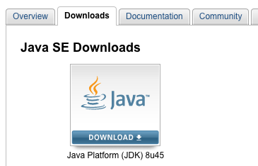

Set Up Intel® IoT Dev Kit Eclipse - Part 1: Installation
The Intel® IoT Developer Kit (“dev kit”) lets you create and test applications on Intel® IoT platforms. The Eclipse IDE distributed with the dev kit facilitates writing IoT applications in C and C++.
This document will guide you through installing the Eclipse IDE distributed with the Intel® IoT Developer Kit for Intel® Edison development.
Install prerequisite software
Depending on your computer’s operating system, you may need to install additional software in order to use the dev kit version of Eclipse.
Install 7Zip (Windows only)
7zip supports extended file paths which some of the contents of the compressed file have so only use 7zip software to extract the file.

Install Java
Eclipse depends on either a Java Runtime Engine (JRE) or Java Development Kit (JDK). Check if you have Java installed and, if you do not, install it.

Extract Intel® IoT dev kit Eclipse IDE
Copy the compressed archive containing the IoT-customized Eclipse IDE to your computer and extract the contents.

Launch Eclipse using batch file
Use devkit-launcher.bat to launch Eclipse with all the necessary Intel® IoT environment settings. Use the launcher batch file (instead of eclipse.exe) to launch Eclipse every time.
Having issues? Refer to Troubleshooting »
You should now have the Intel® IoT Dev Kit Eclipse IDE installed. Next, create and run a Hello Word project (blinking the onboard LED) on the Intel® Edison.